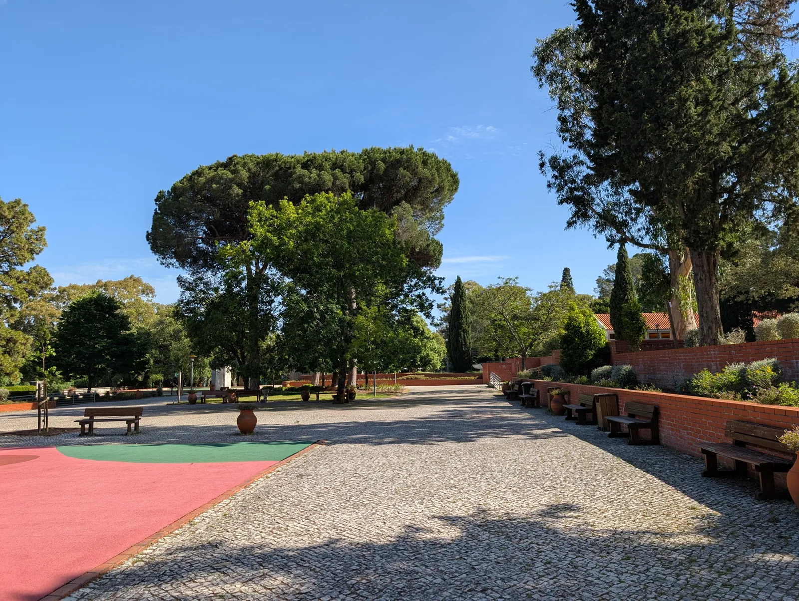
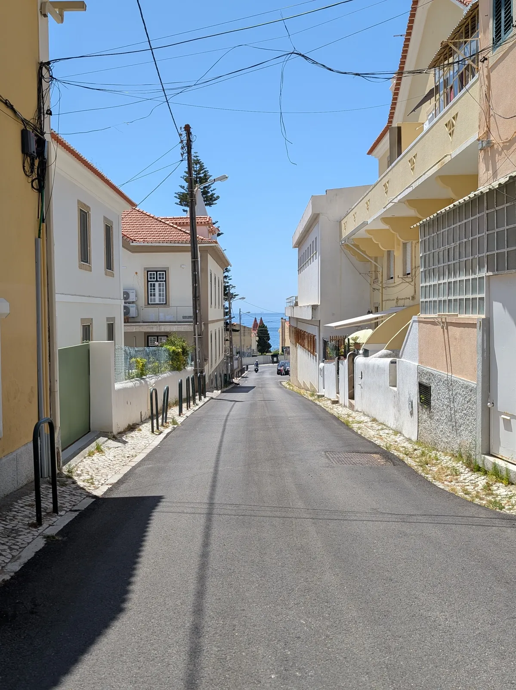
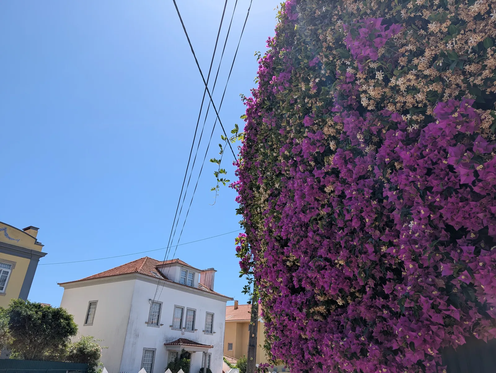
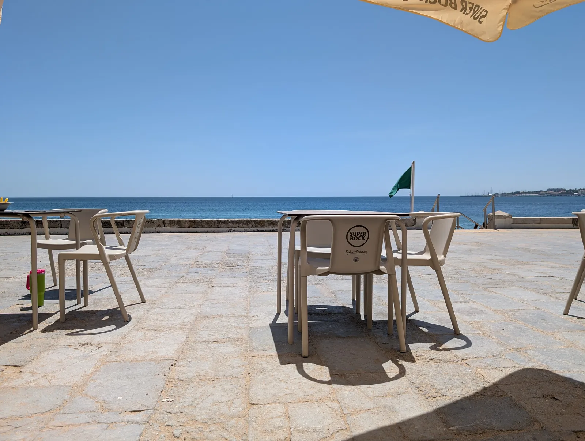

- It seems we've avoided some toasty days in the UK. The temperatures haven't been that different in Lisbon, but it's far more tolerable here. How come Estoril is 23 km from Lisbon but it's always 4 C colder? Is it the ocean breeze?
- I could have spent my late evenings more unwisely than by reading the entire latest encyclical letter by Pope Leo XIV (via, e.g., Simon Willison). That is an understatement, of course; I thought the reflection about what sort of post-AI world we'd rather have and his view that when we apply AI (or any other technology), we should optimise for the dignity of the human person was very pertinent.
- Sorry, most people have AI coming out of their ears already but Kyla Scanlon's latest, long and well researched newsletter about AI and jobs was also an interesting read.
- I have migrated to Antigravity CLI but noticed that it makes changes without showing the diff and seeking confirmation. It's true that otherwise it would be a clunky workflow and not very high-throughput, but are we being encouraged to just vibe code it?
- The return flight from Stansted to Lisbon was perhaps not as smooth as the outbound flight (take off delays but that's par for the course in Lisbon) but it was completely drama free, which makes this route a very valid option for us to visit Lisbon, in addition to Easyjet from Luton.



